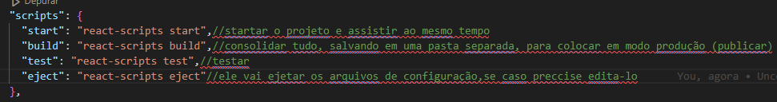

Create React app
É uma ferramento do React para se iniciar um projeto do zero, e é uma forma de criar um
projeto moderno com varios recursos recentes.
O react tem muitas coisas que seram escritas de forma q o navegador nao reconhece, e será usado o
jsx q sera usado o tempo todo, e para que funcione normalmente será preciso instar as
ferramentas para q se possa programar.
Para isso será instalado o create React app
npx create-react-app .
Aqui esta sendo instalado todos os arquivos necessarios dentro da pasta onde esta aberto o terminal
Após tudo instalado foi criado varias pastas dentro da pasta do projeto, agora é explicar cada uma....
- node_modules é uma pasta que inclui todo o código relacionado às dependências que o Create React App instalou. Você jamais precisará entrar nessa pasta.
- public é uma pasta que usaremos para armazenar nossos itens estáticos, como as imagens, svgs e fontes da aplicação em React.
- src é a pasta que contém o código-fonte. É lá que todo nosso código relacionado ao React estará e é nela que trabalharemos fundamentalmente na criação de nossa aplicação.
- package.json(arquivo) é o arquivo que gerencia as dependências da aplicação e o que está incluído na pasta node_modules do projeto, além dos scripts de que precisamos para executar a nossa aplicação.
scripts do package.js importantes para se entrender.

Agora é testar o projeto para ve se esta tudo funcionando corretamente.
npm start